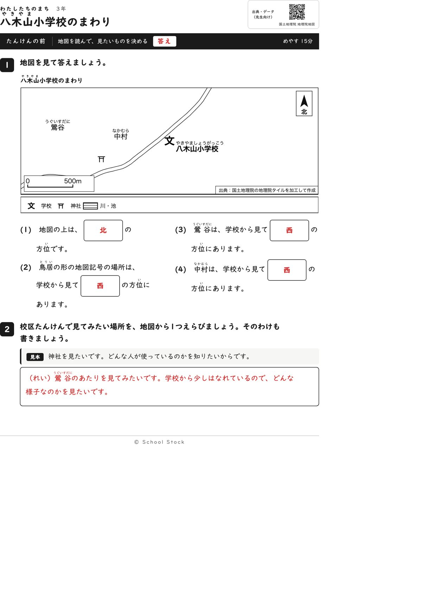
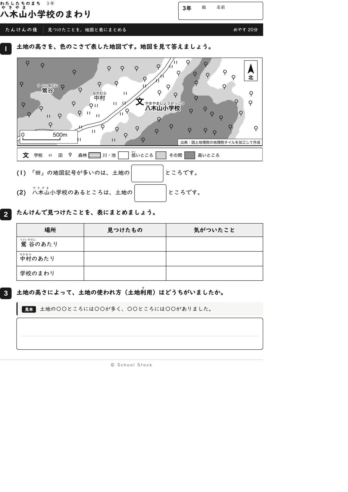
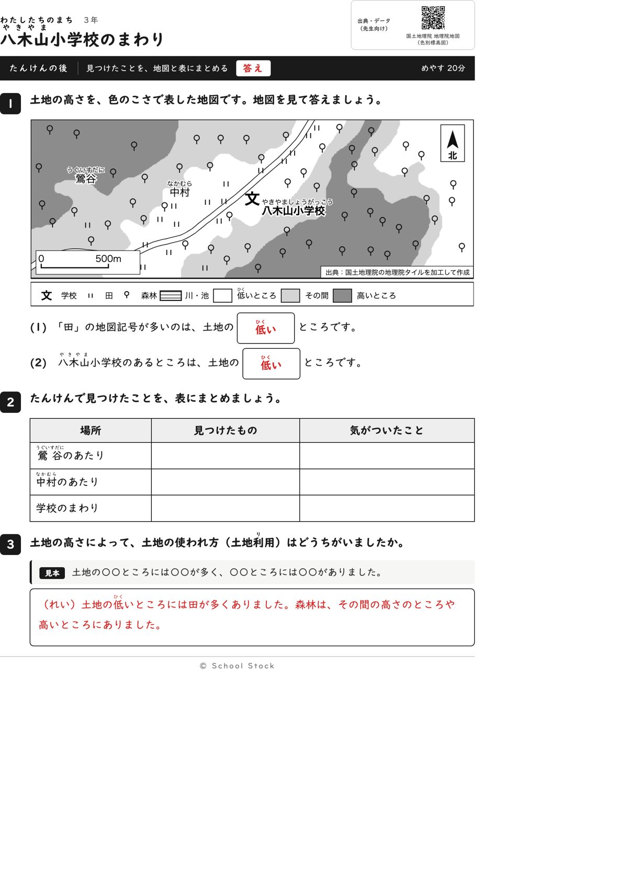
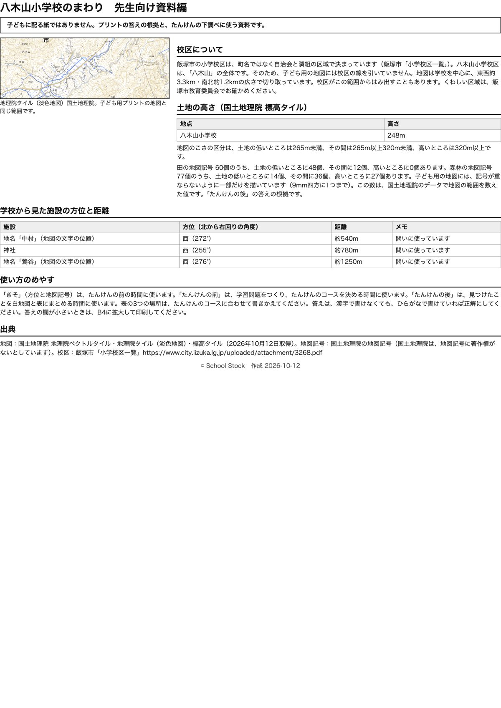

紙





直すところ
直すところはありません。
1回目のレビューで出た直し（1件・道具を直して作り直しました）
| 紙 | どこ | 何が困るか |
|---|---|---|
| たんけんの後 | 1の(2)と(3)の「〇〇の色です」の答えの欄 | 色のこさを聞いているのか高さを聞いているのかが読めず、子どもは白やうすい色と書きます。その答えは地図からは正しいのに、赤字の低いところと合わず、答えが割れます。 |
2回目のレビューで出た直し（1件・道具を直して作り直しました）
| 紙 | どこ | 何が困るか |
|---|---|---|
| たんけんの後 | 地図の左下の縮尺の「0」と「500m」 | 道の二重線が「0」と「500m」の文字の上を通っていて、数字に線が重なります。縮尺は距離を読む大事な記号なので、読みにくくなります。たんけんの前の地図も、薄い線が同じ場所を通っています。 |
専門家団の声（いまの紙を見て）
香月八重筆頭・全学年
学年は合っています。前は方位、後は凡例の言葉から土地の高さを答える順で、3年の歩幅のままです。つかむことは、田は低いところに多いという一点で、一文で言えます。
日隈耕平社会
縮尺の「0」と「500m」は白い地の上に載り、道の線が文字にかからなくなりました。ほかの地名、学校名、出典の箱とも重なっていません。神社255度、鶯谷276度、中村272度で西に決まります。田60個のうち48個が低いところ、学校は248mで低いところに入り、資料編と答えが合っています。凡例に川・池があって地図に出てこない点は、前回と同じく好みの範囲です。
藤川湊すぐ終わる子
前は4問とも速く終わります。後の表と3の文で、見本の型に自分の言葉を入れる手ごたえがあります。
田淵さくら例がないと止まる子
前の見本の神社で書き出しが分かるので、2番も動けます。後の(1)(2)は凡例の3つの言葉から選べて迷いません。
轟大和読む前に諦める子
前は西が続くので勘で書けてしまいますが、白紙にはなりません。後は凡例の「低い」を探せば合っとったと言えます。問いの文は2行以内です。